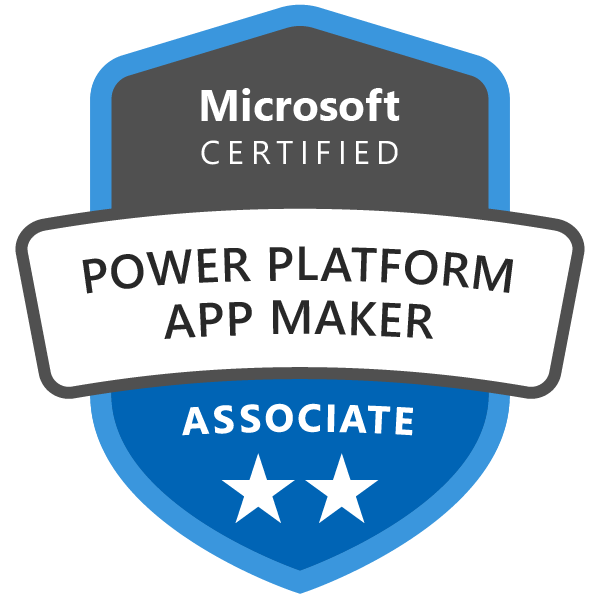
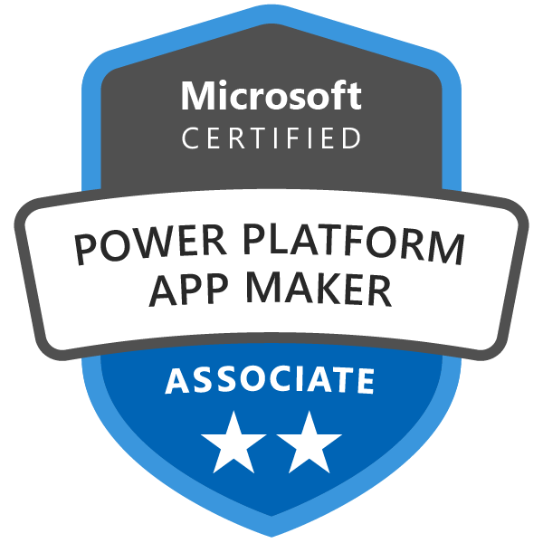
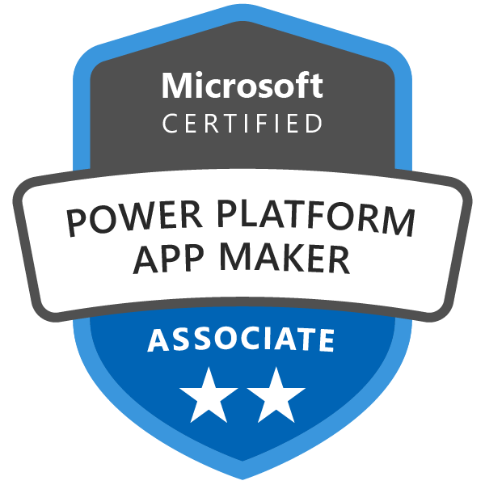

Ingeniero Eléctrico | Universidad de Málaga | (+34)662000124 |
igntc93@gmail.com
Graduado en Ingeniería Eléctrica con gran aspiración de comenzar en el sector de infraestructura Cloud Computing Desarrollo. Actualmente realizando un programa de formación Cloud Computing desarrollo en el entorno Microsoft Azure, impulsado por la organización Generation y la EOI (Escuela de Organización Industrial) junto con Microsoft.
Gestión de servicios y presupuestos en la infraestructura eléctrica correspondientes a Endesa e Iberdrola. Líneas de baja, media y alta tensión en diversas regiones a nivel nacional.
Un programa de formación dirigido a jóvenes inscritos en el Sistema Nacional de Garantía Juvenil, gestionado por la organización Generation y la EOI (Escuela de Organización Industrial). Cuenta con la financiación de Microsoft para llevar a cabo el programa entorno a los conocimientos que proporcionan los certificados de Microsoft Azure.

Noviembre 2022 - Marzo 2023
Universidad de Málaga (UMA) |
Escuela de Ingenierías Industriales
La Escuela de Ingenierías Industriales de la Universidad de Málaga cubre todas las áreas relevantes en los ámbitos de la Ingeniería Industrial en oferta docente, incluso han obtenido el sello internacional de calidad EURO-ACE que otorga la agencia europea ENAEE
Iby and Aladar Fleischman Faculty of Engineering Tel Aviv University
La Universidad de Tel Aviv destaca con una clasificación constantemente alta entre las principales universidades internacionales. En Israel, la universidad también ocupa el primer lugar en la mayoría de las clasificaciones.
En la Universidad de Tel Aviv (Israel) tuve la excelente oportunidad de realizar el Trabajo Fin de Grado, lo cual me proporcionó diversas habilidades en el entorno de programación sobre sistemas de control automático. La defensa fue realizada ante el tribunal de la Universidad de Málaga otorgando Matrícula de Honor en la evaluación. Para más información sobre el proyecto aquí.
Octubre 2021 - Febrero 2022
Idiomas
Español (Castellano)
Nivel Nativo
100%
Inglés (UK)
Nivel Intermedio (B2 Cambridge Assessment English)
70%
Habilidades formativas
Lenguajes de programación
C# y C++
HTML
SQL
Python
Aptitudes e intereses
- Gran motivación para aprender y evolucionar en todos los aspectos
- Partidario de la organización y estrategia de trabajo individual y colectiva
- Buena capacidad de respuesta ante la responsabilidad
- Aliado de la perseverancia a la hora de cumplir los objetivos previstos
- Buenas habilidades sociales que permiten un acercamiento al cliente y compañeros
- Los retos suponen estar fuera de la zona de confort, suelo estar en esa zona
Me considero una persona activa con aspiraciones por lo que suelo estar en procesos de aprendizaje en los diversos campos en general. Sobre todo me interesa la informática y la infraestructura red, me parece fascinante esta obra de ingeniería digital. Me apasiona viajar y conocer nuevas culturas, soy una persona extrovertida pero siempre respetando los límites de intimidad. También suelo practicar deporte y estar con amigos, en familia o en pareja me reconforta mucho.
Aunque a veces me considero una persona muy independiente, puedo pasar largos periodos en solitario pero finalmente me encasillo como bastante sociable.
 
 
.png)
{kind=link}
{kind=link}
{kind=link}